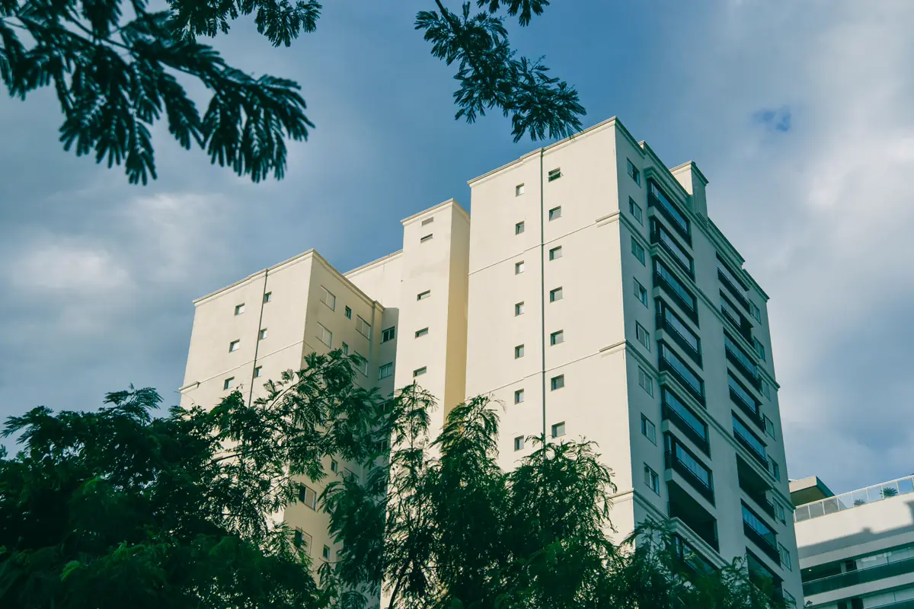
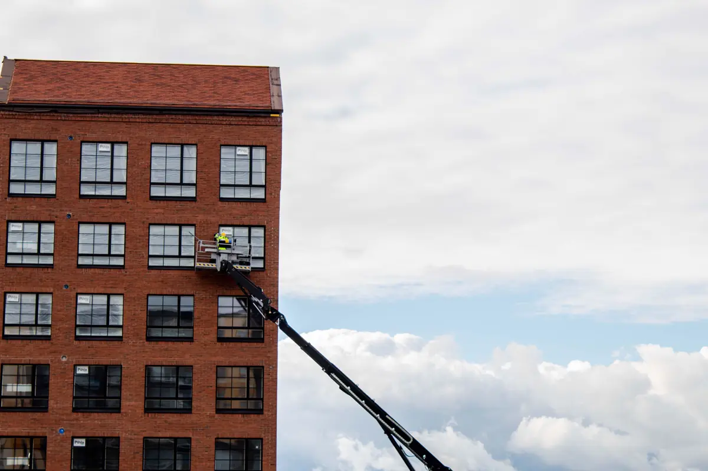

Inspeção predial não é manutenção — é o diagnóstico que vem antes
A ABNT NBR 16747 define a inspeção predial como a avaliação do estado de conservação e funcionamento da edificação, sistema por sistema, para orientar a manutenção. O resultado é um laudo que diz o que está errado, quão grave é e em que ordem resolver. A execução do plano entra depois, na manutenção predial do condomínio, que segue a NBR 5674.
Para o síndico, o laudo cumpre dois papéis: organiza o orçamento dos próximos anos e documenta que a administração agiu sobre os riscos — o dever de conservar as partes comuns está no Código Civil.
Equipe técnica pronta para atender toda a demanda em Vitória, Vila Velha, Serra, Cariacica e região: o orçamento, o agendamento e o acompanhamento ficam centralizados na Axial Engenharia, do primeiro contato à entrega do documento.
O que diz a lei na Grande Vitória
Em Vitória, a Lei 9.418/2019 chegou a exigir laudo de inspeção predial a cada dez anos para prédios maiores. A Lei 9.841/2022 trocou essa exigência pelo Manual de Uso, Operação e Manutenção das Edificações, elaborado por profissional habilitado, em que as vistorias técnicas passam a ser registradas. Fachadas e marquises continuam sob o Código de Edificações: a prefeitura intima e multa imóveis com risco, como fez em centenas de prédios do Centro desde 2023.
Em Vila Velha e na Serra houve projetos de lei de vistoria periódica, e um projeto federal que cria laudo obrigatório de inspeção de edificações já passou pela Câmara e tramita no Senado. Com ou sem lei, a NBR 16747 é a referência técnica — e o laudo é o que o seguro, o comprador e a Justiça pedem quando algo dá errado.

Sistemas inspecionados
| Sistema | O que se procura |
|---|---|
| Estrutura | Fissuras, armadura exposta, corrosão, deformação — ver patologias |
| Fachada | Revestimento solto, som cavo, juntas, pastilha e cerâmica com risco de queda |
| Cobertura e impermeabilização | Infiltração, telhas, calhas, manta exposta, reservatórios |
| Instalações elétricas | Quadros, aquecimento, SPDA, iluminação de emergência |
| Hidrossanitário e gás | Vazamentos, bombas, rede de gás |
| Incêndio e acessibilidade | Hidrantes, extintores, rotas e acessibilidade da área comum |
| Equipamentos | Elevadores, portões, geradores, ar-condicionado central |

Como o laudo organiza as prioridades
Cada anomalia ou falha é classificada pela origem — de projeto ou execução, de agente externo, de uso ou de falta de manutenção — e recebe um grau de prioridade: o que oferece risco à segurança ou à saúde vem primeiro; o que compromete o funcionamento, em seguida; o que só afeta o valor ou a aparência, por último. O plano de ação agrupa os itens em frentes de obra que a assembleia consegue aprovar e cotar.
Na orla de Vitória, Vila Velha e Guarapari, a maresia faz da fachada e das partes metálicas os itens que mais sobem de prioridade. A correção segue em recuperação de fachada e, quando há trabalho em altura, com ancoragem NR-35 projetada.
Perguntas frequentes sobre inspeção predial
Inspeção predial é obrigatória em Vitória?
A Lei 9.418/2019 exigia laudo periódico, mas a Lei 9.841/2022 substituiu essa exigência pelo Manual de Uso, Operação e Manutenção das Edificações, com registro das vistorias técnicas. A prefeitura continua intimando imóveis com fachada ou marquise em risco pelo Código de Edificações.
Qual a diferença entre inspeção predial e manutenção predial?
A inspeção, pela NBR 16747, é o diagnóstico: identifica anomalias e falhas e define prioridades. A manutenção, pela NBR 5674, é a execução organizada dos serviços ao longo do tempo. O laudo de inspeção alimenta o plano de manutenção.
De quanto em quanto tempo fazer a inspeção predial?
A NBR 16747 não fixa um prazo único; a periodicidade depende da idade, do uso e do estado do prédio. Em edifício com mais de dez anos ou na orla, uma inspeção completa a cada poucos anos, com acompanhamento anual da fachada, é prática comum.
Quanto tempo leva a inspeção de um condomínio?
Um prédio de uma torre costuma ser vistoriado em um ou dois dias de campo, conforme o acesso à fachada e à cobertura. O laudo com plano de ação sai, em geral, em duas a três semanas.
O laudo de inspeção predial tem ART?
Sim. O laudo é assinado por engenheiro habilitado, com ART registrada no CREA-ES, o que dá validade técnica ao documento perante assembleia, seguradora e órgãos públicos.
Inspeção predial na Grande Vitória
Laudo NBR 16747 para condomínios residenciais e edifícios comerciais:
O prédio tem mais de dez anos?
Informe o número de torres, pavimentos e a idade do prédio. Retornamos com escopo, prazo e valor.